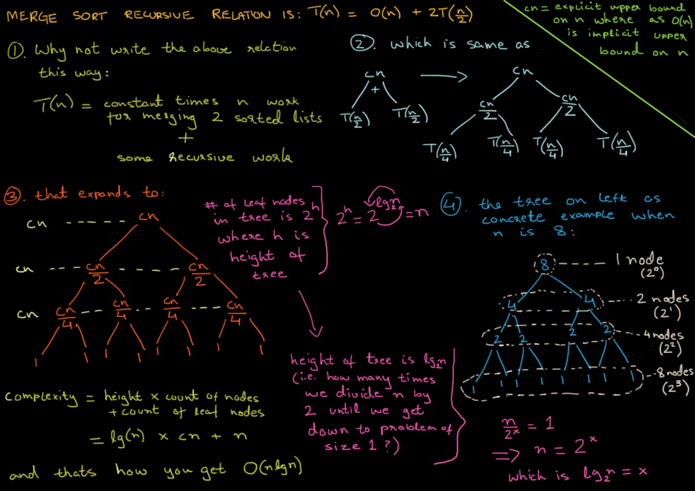

Lo mas importante, urgente o util arriba, secciones iran por orden de relevancia, siendo lo primero los mas importante y lo ultimo lo que no es tan importante
Seccion para favoritos o mas usados
No de clik aqui
Bootstrap 3 - El manual oficial - Uniwebsidad
Bootstrap - GetBootstrap "Wiki Oficial"
Todo Lo Que Necesitas de JavaScript - Dev Mozilla
Todo Lo Que Necesitas de HTML - Dev Mozilla
Todo Lo Que Necesitas de CSS - Dev Mozilla
Dani - Inspiracion para mi Sitio Web Personal
Axel - Inspiracion para mi Sitio Web Personal
Color Hunt - Paleta de Colores
Inversiones y Finanzas Personales
Tutoriales Programacion Ya - CSS
Jira - Organizar por tareas y cronogramas para Proyectos
Jira - Proyecto Scrum/Hospital
Es muy util para aprender, poner en practica y no olvidar - Eduard
Libros - Programacion, Diseño y Desarrollo Web
Guía de optimización en buscadores (SEO) para principiantes
Centro de Busqueda de Google Marketing, Desarrolladores y SEO
! Deberias visitar empresas y centros de desarrollo y programacion en Bogota
Time Complexity Merge Sort
Guía de optimización en buscadores (SEO) para principiantes
Habitos Atomicos - Kyle Cease :>
Me gusta mucho una frase del libro el mito de la motivación: "Sé poco realista cuando te fijes una meta, y luego sé realista acerca de cómo lograrás esa meta." La rutina es importante, y poder crear una que se alinee con tus objetivos de largo plazo es muy importante. Empezando de a poco, ganando pequeñas batallas, viendo día a día pequeños progresos, es que lograremos la motivación y fuerza de voluntad para seguir adelante. Les recomiendo los libros Hábitos Atómicos, El mito de la motivación y Willpower. Saludos!
Kosmi - Entretenimento con Amigos
"Videos de Mision Tic de Septiembre en YouTube - Empresas Invitadas"
ScotiaToma notas con preguntas
Hacerte preguntas te permite establecer con mayor eficacia lo que quieres hacer, lo que deberias hacer y demas
Puede responder estas preguntas si quieres tener las cosas mas claras
1. Preguntas en BuJo
Become The HERO of Your LIFE! Stop Wasting Your Potential - Jordan Peterson Motivation
Jordan Peterson: Stop Playing With Yourself
El Script del Canva °~°
Esta es una seccion